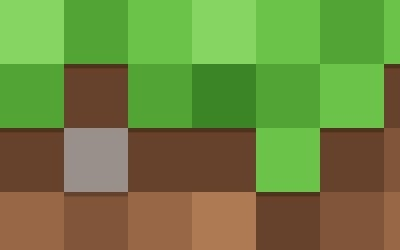

Hobilerim
- 🎮 Oyun oynamak
- Satranç, dama, sudoku oynamayı severim
- Bilgisayar oyunları, strateji, rol yapma oyunları oynarken zevk alırım
- Kedimle ilgilenmeyi severim
- 📚 Kitap okumak, sevdiğim kitabı okurken kafam dinlenir ve huzur bulurum
- Labirent Serisi, James Dashner (kıyamet sonrası dünya, aksiyon, macera)
- Çöplük, Andy Mulligan (roman, macera tarzı güzel bir kitap)
- Ateşi Yakalamak, Suzanne Collins (roman, hayatta kalma ve bol aksiyon)
- 🎧 Müzik dinlemek (Kod yazarken veya evde boş vaktimde müzik dinlemeyi severim)
- 💻 Kod yazmak (Kod yazarken kendimi geliştirmeyi ve kendime bir şeyler katmayı severim)
